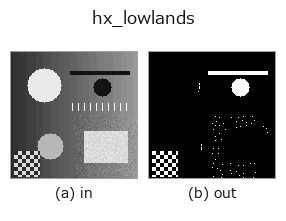

halcon_ext op• Data kinds: image → region
• Call: fullseye.apply(img, "hx_lowlands", a=0.5, b=0.5) (the 2-D model is one image plus two scalar knobs a,b∈[0,1])
• HALCON equivalent: lowlands (the HALCON reference is a useful guide to its meaning and parameters)

*The figure is the actual output on a synthetic 128×128 input. Left: input, right: output. Point clouds are drawn as a top-down scatter (brightness = z), 1-D series as a line plot, volumes as the maximum-intensity projection along z, videos as the middle frame, complex images as magnitude; return values that are not pictures are shown as the values themselves.*
Sweeping knob a (0.1 / 0.5 / 0.9, the other knob at its default):
▸ hx_lowlands: knob a sweep (docs site)
*Knob b does not change the output (measured: identical at 0.1 / 0.5 / 0.9).*
On other images (synthetic scene / photo / coins. Top row: inputs, bottom row: their outputs. Knobs at default):
▸ hx_lowlands: other inputs (docs site)
*The 4th column is a colour (H,W,3) input. This op handles colour without crossing channels (it does not convolve the colour channel as a third spatial axis).*
Detect the basins of the grey values (flat local minima): the region of pixels equal to their neighbourhood minimum.
Takes the local minimum mn with ndimage.minimum_filter (a square window of side size, mirrored border), and returns a 0/1 float region in which pixels with v <= mn + 1e-6 and v < image mean are 1.
• a → window side size = 3 + int(a*6) (3 to 9 pixels). The larger, the wider the range over which a pixel must be minimal, and the fewer points.
• b is unused.
In a flat hollow every pixel in the window equals the minimum, so it is picked up as a whole area (as a surface, not 1 point). Conversely, if the whole image is flat, no pixel satisfies v < mean and the result is empty. Because of the "darker than the mean" condition, shallow hollows within bright surfaces are not picked up. With noise, lots of small minima appear, so put hx_mean_shape / gauss_filter before it. For the opposite, ridges, invert the image and apply the same op.
• gallery2d_halcon_ext family guide
• Sample-data catalog (download URLs / licences) — 2-D uses skimage.data (BSD/public domain) plus synthetic images; 3-D lists download URLs for real data sources (Stanford, PDS, …).
• Operator provenance and references — the sources of the research/methods this op family came from.
• The canonical algorithm (author, year) and its uses are named in the family usage guide above.
The program below has been verified to run (same input as the figure). In Studio's help this block becomes buttons that load and run it on the spot.
hx_lowlands 0.50 0.50
▸ Load this pipeline · Load & run
• gallery2d_halcon_ext — py -3.11 examples/gallery2d_halcon_ext.py
region as input)identity · reg_erode · reg_dilate · reg_open · reg_close · fill_holes · select_largest · remove_small
halcon_ext)hx_gen_circle · hx_gen_ellipse · hx_gen_rectangle2 · hx_gen_checker_region · hx_gen_grid_region · hx_gabor · hx_fit_surface1 · hx_fit_surface2
*Provenance: ops.py — 2D operator registry. This per-op note is generated by tools/opdocs.py md (do not hand-edit).*
© 2026 Kazufumi Furuse — Fullseye operator documentation. Licensed under Apache-2.0.